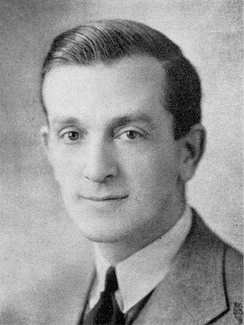

-1-MasterItem.svg)
Stories of Westminster United Church & its People / Page
168
Herbert Sadler- Organist and Choir Leader
Herb was born in Bristol England in 1894. We have a
limited record of his early life before the family emigrated
to Canada in 1911. He was raised in the Anglican Church,
became a a choir boy at the age of six at Holy Trinity in
Ramsgate. His experience as an organist began at age 12
at All Hallows Church in Bristol where, as sub-organist, he
received a thorough training in liturgical music, plainsong,
and hymnody. The family arrived in Winnipeg when Herb
was 19 years old.
In Winnipeg from 1915 to 1917 he served as organist
at both St George’s and St. Peter’s Anglican Churches.
A highlight of this service was a presentation of the
Maunder work,
Olivet to Calvary
, by the two choirs and
their soloists with Herb at the organ. The review in the
paper was effusive in its praise of all the performers.
“… It was an unqualified success and it is doubtful if better
music has ever been rendered in the north end of the city
… A great deal of the credit must go to Mr. Saddler (sic),
the organist who was perfect throughout …”
In 1917 he enlisted in the Army Medical Corps, Dalhousie University Unit,
serving overseas until
the end of the war. He then returned briefly to St. George’s until he was appointed as our organist.
In Herb’s own words: “ In the early fall of 1919, a very self conscious young man, but lately returned
from active service in France “aimed at the moon” by applying for the position of organist at
Westminster Church … After an anxious period of waiting ( for this was the most important
event in the applicant’s musical life so far), there came one day a call to try out …
Table
of Contents
Music at Westminster
